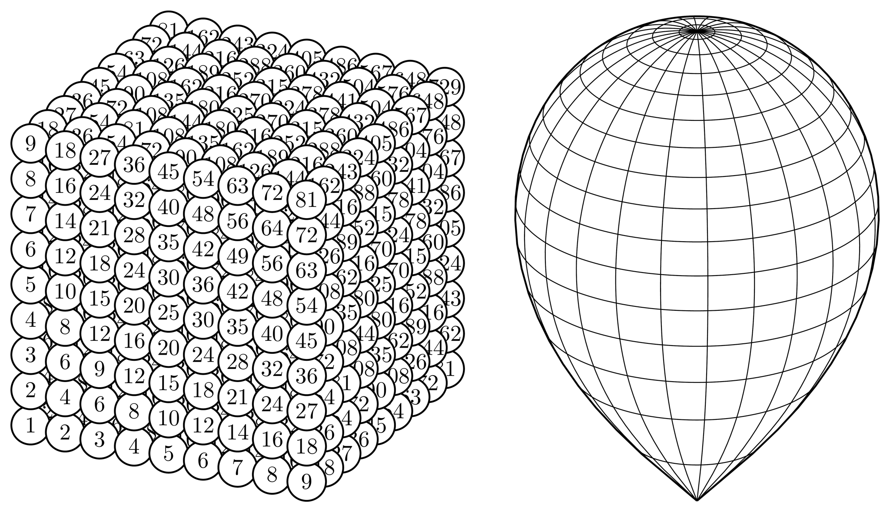
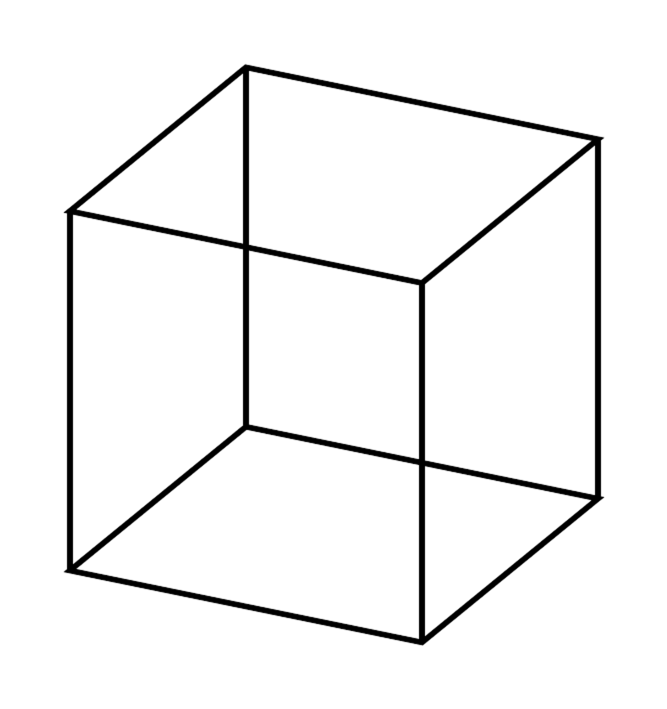
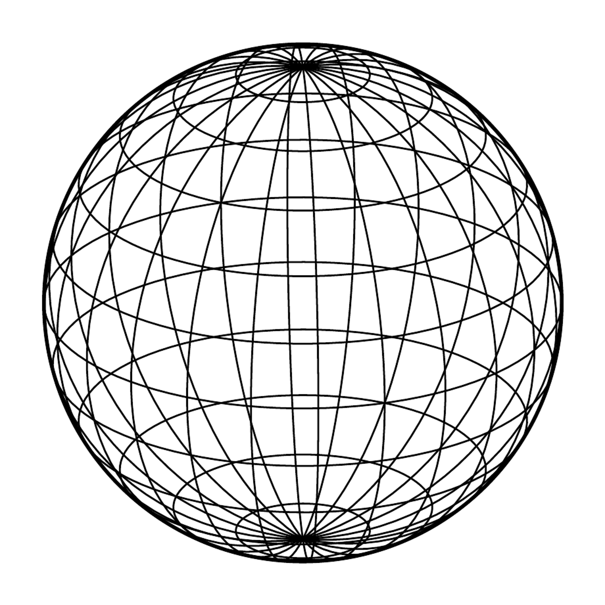
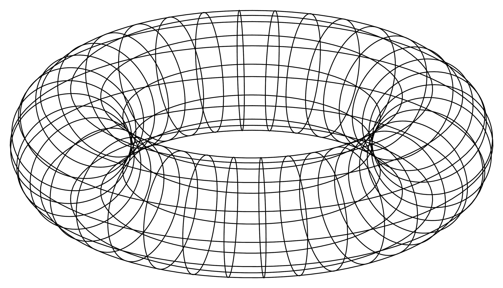
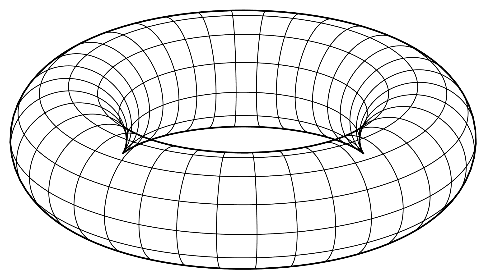
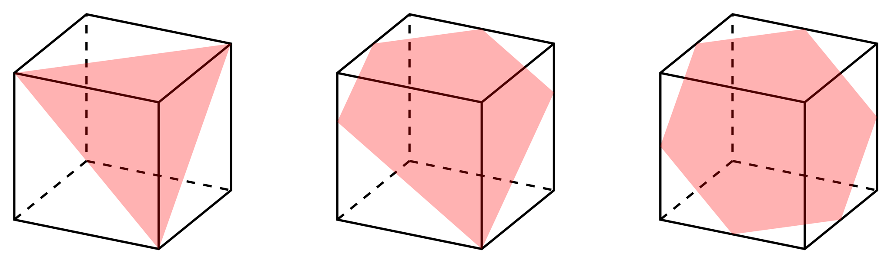
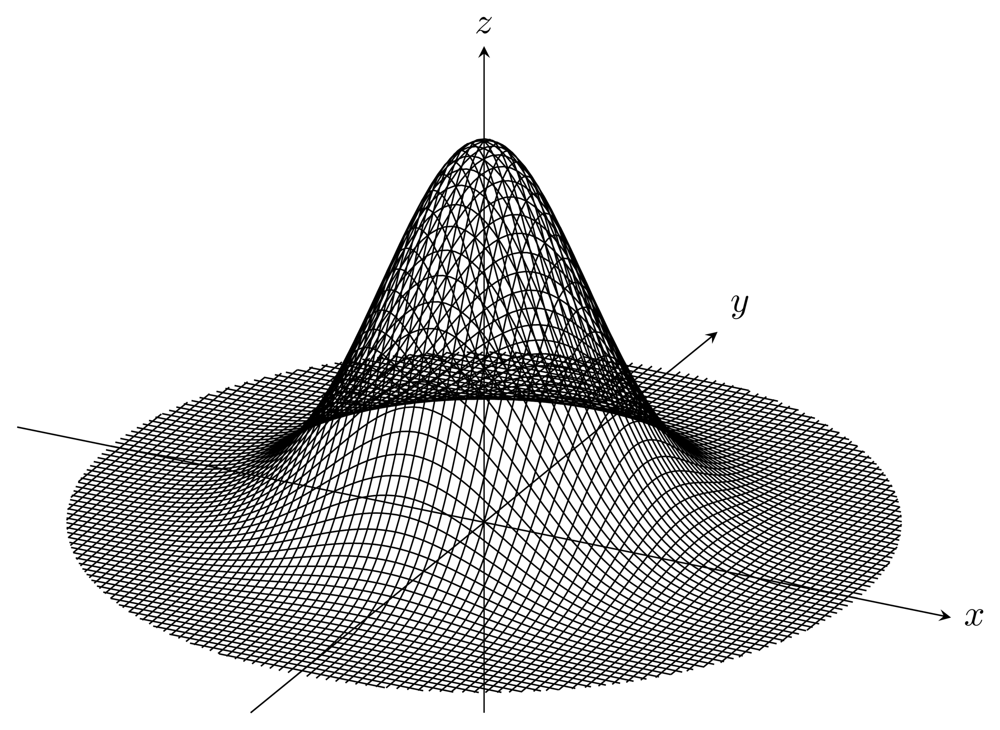
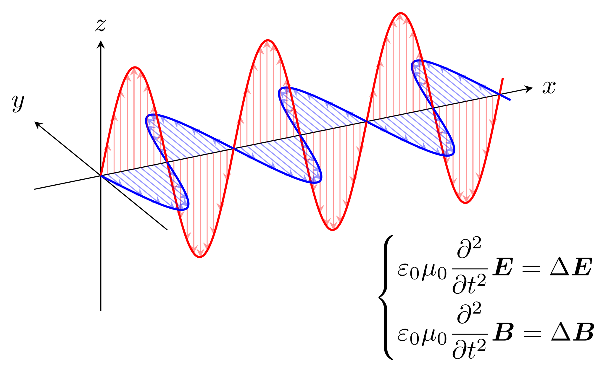

tikz-3dplotを用いない立体描画
概要
目標
描画例
\newcommand\project[3]{{(2*(#1)+(#2))/sqrt(5)},{(-(#1)+2*(#2)+5*(#3))/sqrt(30)}}
\newcommand\polarproj[3]{\project{(#1)*cos(#2)*cos(#3)}{(#1)*sin(#2)*cos(#3)}{(#1)*sin(#3)}}
% 九九九の表
\begin{tikzpicture}[scale=0.6]
\foreach \x in {1, 2, ..., 9}{
\foreach \y in {9, 8, ..., 1}{
\foreach \z in {1, 2, ..., 9}{
\draw[fill=white, thick](\project\x\y\z)circle(0.5)node{\pgfmathparse{int(\x*\y*\z)}$\pgfmathresult$};
}
}
}
\end{tikzpicture}\qquad
% レムニスケートの半分の回転体
% r^2=-cos2φ, (x,y,z)=(rcosθcosφ,rsinθcosφ,rsinφ), 0<z
\begin{tikzpicture}[scale=8]
% 経線?
\newcommand\varphiborder{atan(2*sin(\longitude)-cos(\longitude))/3}
\foreach \longitude in {15, 30, 45}
\draw[domain=\varphiborder+60:\varphiborder+120, variable=\latitude, samples=100]plot(\polarproj{sqrt(-cos(2*\latitude))}\longitude\latitude);
\foreach \longitude in {60, 75, 90, ..., 180}
\draw[domain=\varphiborder+60:135, variable=\latitude, samples=100]plot(\polarproj{sqrt(-cos(2*\latitude))}\longitude\latitude);
% 緯線?
\newcommand\thetaborder{acos(-tan(3*\latitude)/sqrt(5))}
\foreach \latitude in {46, 49, ..., 79}
\draw[domain=360-\thetaborder-atan(2):360+\thetaborder-atan(2), variable=\longitude, samples=100]plot(\polarproj{sqrt(-cos(2*\latitude))}\longitude\latitude);
\foreach \latitude in {82, 85, 88}
\draw[domain=0:360, variable=\longitude, samples=100]plot(\polarproj{sqrt(-cos(2*\latitude))}\longitude\latitude);
% 輪郭線
\newcommand\latitude{(\varphiborder+60)}
\draw[thick, domain=0:360-acos(1/sqrt(5))-atan(2), variable=\longitude, samples=100]plot(\polarproj{sqrt(-cos(2*\latitude))}\longitude\latitude);
\end{tikzpicture}射影
% (\project{x}{y}{z}) -> ({X},{Y})
\newcommand\project[3]{{(2*(#1)+(#2))/sqrt(5)},{(-(#1)+2*(#2)+5*(#3))/sqrt(30)}}% 立方体の描画
\newcommand\project[3]{{(2*(#1)+(#2))/sqrt(5)},{(-(#1)+2*(#2)+5*(#3))/sqrt(30)}}
\begin{tikzpicture}
\draw(\project000)--(\project100)--(\project110)--(\project010)--cycle;
\draw(\project001)--(\project101)--(\project111)--(\project011)--cycle;
\draw(\project000)--(\project001);
\draw(\project100)--(\project101);
\draw(\project110)--(\project111);
\draw(\project010)--(\project011);
\end{tikzpicture}立方体
% 球面の描画
\newcommand\project[3]{{(2*(#1)+(#2))/sqrt(5)},{(-(#1)+2*(#2)+5*(#3))/sqrt(30)}}
\begin{tikzpicture}
% 輪郭線
\draw(0,0)circle(1);
% longitude=θ, latitude=φ
% 経線
\foreach \longitude in {15, 30, ..., 180}
\draw[very thin, domain=0:360, variable=\latitude, samples=100]plot(\project{cos(\longitude)*cos(\latitude)}{sin(\longitude)*cos(\latitude)}{sin(\latitude)});
% 緯線
\foreach \latitude in {-75, -60, ..., 75}
\draw[very thin, domain=0:360, variable=\longitude, samples=100]plot(\project{cos(\longitude)*cos(\latitude)}{sin(\longitude)*cos(\latitude)}{sin(\latitude)});
\end{tikzpicture}% 球面の描画 (球面座標系)
\newcommand\project[3]{{(2*(#1)+(#2))/sqrt(5)},{(-(#1)+2*(#2)+5*(#3))/sqrt(30)}}
% (\polarproj{r}{θ}{φ}) -> (\project{rcosθcosφ}{rsinθcosφ}{rsinφ})
\newcommand\polarproj[3]{\project{(#1)*cos(#2)*cos(#3)}{(#1)*sin(#2)*cos(#3)}{(#1)*sin(#3)}}
\begin{tikzpicture}
% 輪郭線
\draw(0,0)circle(1);
% longitude=θ, latitude=φ
% 経線
\foreach \longitude in {15, 30, ..., 180}
\draw[very thin, domain=0:360, variable=\latitude, samples=100]plot(\polarproj1\longitude\latitude);
% 緯線
\foreach \latitude in {-75, -60, ..., 75}
\draw[very thin, domain=0:360, variable=\longitude, samples=100]plot(\polarproj1\longitude\latitude);
\end{tikzpicture}単位球
輪郭
% トーラスの描画1
\newcommand\project[3]{{(2*(#1)+(#2))/sqrt(5)},{(-(#1)+2*(#2)+5*(#3))/sqrt(30)}}
\begin{tikzpicture}
% longitude=θ, latitude=φ
% 経線?
\foreach \longitude in {10, 20, ..., 360}
\draw[domain=0:360, variable=\latitude, samples=100]plot(\project{cos(\longitude)*(3+cos(\latitude))}{sin(\longitude)*(3+cos(\latitude))}{sin(\latitude)});
% 緯線?
\foreach \latitude in {30, 60, ..., 360}
\draw[domain=0:360, variable=\longitude, samples=100]plot(\project{cos(\longitude)*(3+cos(\latitude))}{sin(\longitude)*(3+cos(\latitude))}{sin(\latitude)});
\end{tikzpicture}二次元トーラス (美しくない)
二次元トーラス (美しい)
atanはこの主値の取り方)
\begin{align*}
\varphi_1&=\tan^{-1}(2\sin\theta-\cos\theta)\\
\varphi_2&=\tan^{-1}(2\sin\theta-\cos\theta)+180^\circ
\end{align*}
となり、$\varphi_1\leqq\varphi\leqq\varphi_2$の範囲を描画することで手前側の曲線になります。acosはこの主値の取り方)
\begin{align*}
\theta_1&=-\cos^{-1}\left(-\frac1{\sqrt5}\tan\varphi\right)-\tan^{-1}2\\
\theta_2&=\cos^{-1}\left(-\frac1{\sqrt5}\tan\varphi\right)-\tan^{-1}2\\
\end{align*}
と定めるとします。このときトーラスの回転軸から見て外側の領域($0<\cos\varphi$)では$\theta_1\leqq\theta\leqq\theta_2$の範囲が手前側になり、回転軸から見て内側の領域($\cos\varphi<0$)では$\theta_2\leqq\theta\leqq\theta_1+360^\circ$の範囲が手前側になります。$\tan^{-1}\sqrt5$は約$65.9^\circ$なので、上の議論から描画範囲は概ね
- $-65.9^\circ<\varphi<65.9^\circ$の場合$\theta_1\leqq\theta\leqq\theta_2$
- $65.9^\circ\leqq\varphi\leqq114.1^\circ$の場合$0^\circ\leqq\theta\leqq360^\circ$
- $114.1^\circ<\varphi<245.9^\circ$の場合$\theta_2\leqq\theta\leqq\theta_1+360^\circ$
% トーラスの描画2
\newcommand\project[3]{{(2*(#1)+(#2))/sqrt(5)},{(-(#1)+2*(#2)+5*(#3))/sqrt(30)}}
\begin{tikzpicture}
% longitude=θ, latitude=φ
% 経線?
\newcommand\varphione{atan(2*sin(\longitude)-cos(\longitude))}
\newcommand\varphitwo{\varphione+180}
\foreach \longitude in {10, 20, ..., 360}
\draw[domain=\varphione:\varphitwo, variable=\latitude, samples=100]plot(\project{cos(\longitude)*(3+cos(\latitude))}{sin(\longitude)*(3+cos(\latitude))}{sin(\latitude)});
% 緯線?
\newcommand\thetaone{-acos(-tan(\latitude)/sqrt(5))-atan(2)}
\newcommand\thetatwo{acos(-tan(\latitude)/sqrt(5))-atan(2)}
\foreach \latitude in {-60, -30, ..., 60}
\draw[domain=\thetaone:\thetatwo, variable=\longitude, samples=100]plot(\project{cos(\longitude)*(3+cos(\latitude))}{sin(\longitude)*(3+cos(\latitude))}{sin(\latitude)});
\foreach \latitude in {90}
\draw[domain=0:360, variable=\longitude, samples=100]plot(\project{cos(\longitude)*(3+cos(\latitude))}{sin(\longitude)*(3+cos(\latitude))}{sin(\latitude)});
\foreach \latitude in {120, 150, ..., 240}
\draw[domain=\thetatwo:\thetaone+360, variable=\longitude, samples=100]plot(\project{cos(\longitude)*(3+cos(\latitude))}{sin(\longitude)*(3+cos(\latitude))}{sin(\latitude)});
% 輪郭線
\foreach \latitude in {\varphione, \varphitwo}
\draw[thick, domain=0:360, variable=\longitude, samples=100]plot(\project{cos(\longitude)*(3+cos(\latitude))}{sin(\longitude)*(3+cos(\latitude))}{sin(\latitude)});
\end{tikzpicture}実例
立方体の切断
% 立方体の切断
\newcommand\project[3]{{(2*(#1)+(#2))/sqrt(5)},{(-(#1)+2*(#2)+5*(#3))/sqrt(30)}}
\begin{tikzpicture}
% 3つの立方体
\foreach \shift in {0, 4, 8}{
\draw[thick, shift={(\shift,0)}](\project002)--(\project022)--(\project222)--(\project220)--(\project200)--(\project000)--cycle--(\project202)--(\project222);
\draw[thick, shift={(\shift,0)}](\project200)--(\project202);
\draw[thick, dashed, shift={(\shift,0)}](\project020)--(\project220);
\draw[thick, dashed, shift={(\shift,0)}](\project000)--(\project020)--(\project022);
}
% 三角形の切断面
\fill[red, opacity=0.3](\project200)--(\project222)--(\project002)--cycle;
% 五角形の切断面
\fill[red, opacity=0.3, shift={(4,0)}](\project200)--(\project22{4/3})--(\project122)--(\project012)--(\project00{4/3})--cycle;
% 六角形の切断面
\fill[red, opacity=0.3, shift={(8,0)}](\project100)--(\project210)--(\project221)--(\project122)--(\project012)--(\project001)--cycle;
\end{tikzpicture}立方体の切断
二変数標準正規分布
 二変数標準正規分布
二変数標準正規分布% 二変数標準正規分布
\newcommand\project[3]{{(2*(#1)+(#2))/sqrt(5)},{(-(#1)+2*(#2)+5*(#3))/sqrt(30)}}
\begin{tikzpicture}
% 座標軸
\draw[-stealth](\project{-5}00)--(\project500)node[right]{$x$};
\draw[-stealth](\project0{-5}0)--(\project050)node[above right]{$y$};
\draw[-stealth](\project00{-2})--(\project005)node[above]{$z$};
% 曲面
\foreach \x in {-4, -3.9, ..., 4}
\draw[domain=-sqrt(16-\x*\x):sqrt(16-\x*\x), variable=\y, samples=100]plot(\project\x\y{4*exp(-(\x*\x+\y*\y)/2)});
\foreach \y in {-4, -3.9, ..., 4}
\draw[domain=-sqrt(16-\y*\y):sqrt(16-\y*\y), variable=\x, samples=100]plot(\project\x\y{4*exp(-(\x*\x+\y*\y)/2)});
\end{tikzpicture}二変数標準正規分布
電磁波
 電磁波
電磁波% 電磁波
% ここの射影コマンドは他と異なる
\newcommand\waveproject[3]{{(2*(#1)-(#2))/sqrt(5)},{((#1)+2*(#2)+5*(#3))/sqrt(30)}}
\begin{tikzpicture}
% 座標軸
\draw[-stealth](\waveproject{-1}00)--(\waveproject{6.5}00)node[right]{$x$};
\draw[-stealth](\waveproject0{-2}0)--(\waveproject020)node[above left]{$y$};
\draw[-stealth](\waveproject00{-2})--(\waveproject002)node[above]{$z$};
\draw[red, thick, domain=6:6.05]plot(\waveproject\x0{1.5*sin(180*\x)});
\draw[blue, thick, domain=6:6.05]plot(\waveproject\x{-1.5*sin(180*\x)}0);
\foreach \xshift in {5, 4, 3, ..., 0}{
% 電場
\draw[red, thick, domain=\xshift:\xshift+1, samples=100]plot(\waveproject\x0{1.5*sin(180*\x)});
\foreach \xxshift in {0.1, 0.2, ..., 0.9}
\draw[red, opacity=0.4, -stealth](\waveproject{\xshift+\xxshift}00)--(\waveproject{\xshift+\xxshift}0{1.5*sin(180*(\xshift+\xxshift))});
% 磁場
\draw[blue, thick, domain=\xshift:\xshift+1, samples=100]plot(\waveproject\x{-1.5*sin(180*\x)}0);
\foreach \xxshift in {0.1, 0.2, ..., 0.9}
\draw[blue, opacity=0.4, -stealth](\waveproject{\xshift+\xxshift}00)--(\waveproject{\xshift+\xxshift}{-1.5*sin(180*(\xshift+\xxshift))}0);
}
% 電磁場の波動方程式
\draw(\waveproject60{-3})node{$\begin{cases}
\varepsilon_0\mu_0\dfrac{\partial^2}{\partial t^2}\bm E=\Delta\bm E\\[.5zh]
\varepsilon_0\mu_0\dfrac{\partial^2}{\partial t^2}\bm B=\Delta\bm B
\end{cases}$};
\end{tikzpicture}電磁波